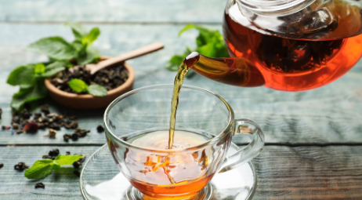
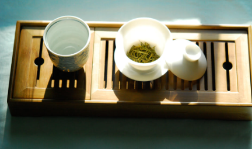
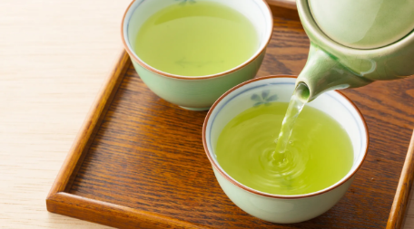
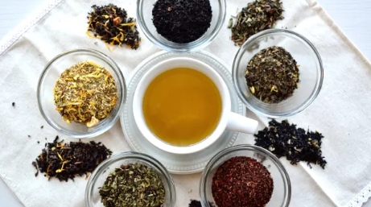
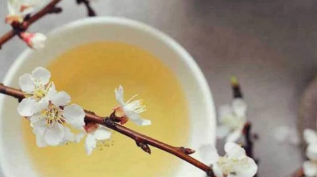
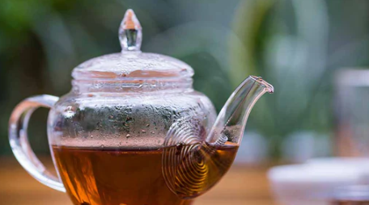
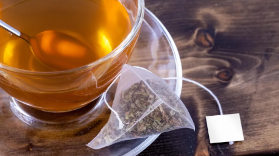

Traditional Black
- Farmer Chang's Honey Black, Taiwan, Beautiful Taiwan Teas, $7.50/oz (about $0.60 per cup)
Called "Honey Fragrance" black tea in Taiwan, this tea brews up notes of honey and cinnamon in a lighter but smooth and flavorful cup. Single steep 3-5 min. Notes: Strong and malty; very enjoyable but don't oversteep. Good only for a single steep. - Farmer Lee's Red Jade Black, Taiwan, Beautiful Taiwan Teas, $9.00/oz (about $0.72 per cup)
Red Jade is in a class of its own and must be approached on what it brings to the table. Think of it as a fine dark Taiwanese Oolong. It's lighter in body and not as malty as Formosa Assam but sweeter, more delicate and with a cleaner finish. Notes: Particular taste hard to describe; may be a little off putting. - Himalayan Gold Black Tea, Himalayas, Vahdam, $6.37/oz (about $0.51 per cup)
Robust, Rich & Flavory Loose Tea. Radiant blend from the Eastern Himalayas with shiny golden tips, high caffeine, and a delicate aroma. - Dian Hong Black, Taiwan, Beautiful Taiwan Teas, $5.00/oz (about $0.40 per cup)
You'll find it to be a classic, delicious black tea - nice mouthfeel, a bit malty and only slightly dry. - Chi Lai High Mountain Black, Taiwan (Chi Lai Mountain, Hualien), Mountain Stream Teas, $14.74/oz (about $1.18 per cup)
A high mountain black tea grown at elevation on Chi Lai Mountain in Hualien County. Clean, bright, and delicately sweet with a smooth mouthfeel and none of the bitterness of lowland blacks. - Alpine Honey Red, Taiwan, Mountain Stream Teas, $8.79/oz (about $0.70 per cup)
A red tea grown at alpine elevation in Taiwan, carrying natural honey notes from the high-mountain terroir. Light-bodied and sweet with a clean, lingering finish.

Traditional Oolong
- Asian Beauty Oolong ★, Taiwan, Beautiful Taiwan Teas, $7.50/oz (about $0.60 per cup)
On the darker side of the Oolong spectrum is our Asian Beauty, a smooth, sweet, and fragrant Oolong - and Taiwan's most famous "bug-bitten" tea. This tea is only produced in the Summer when the leaves naturally acquire notes of honey and cinnamon from the little leaf hoppers. Notes: Very pleasant richer oolong. Benefits from a gongfu steeping but depletes pretty rapidly. - High Mountain Honey Oolong, Taiwan, Beautiful Taiwan Teas, $8.00/oz (about $0.64 per cup)
Farmer Luo makes this small-batch, hand-made tea in the Alishan growing region only once per year in the Summer. Notes: A little lighter than expected. Great entry into oolongs if you're coming from heavy blacks. Benefits from a gongfu steeping. - Dong Ding Oolong - Heavy Roast ★, Taiwan, Beautiful Taiwan Tea, $8.00/oz (about $0.64 per cup)
Dong Ding Oolong masterfully roasted by a friend of ours in Taichung. If you like roasted oolongs, this is a great choice! Make sure to rinse this one first. - 2012 Roasted Tieguanyin ★, Taiwan, Beautiful Taiwan Tea, $7.00/oz (about $0.56 per cup)
It has been said that this is a tea that is close to coffee. But who wants coffee? Other reviews have said it is like walking in a Redwood forest. Worth trying. - Honey Black Oolong (Spring 2026), Taiwan, Mountain Stream Teas, $8.50/oz (about $0.68 per cup)
A spring 2026 harvest black oolong from Taiwan. Processed with high oxidation to yield a naturally sweet honey aroma, rich and smooth body, and a warming finish. - Alishan Firefly Milk Oolong (Winter Pick), Taiwan (Alishan), Mountain Stream Teas, $8.79/oz (about $0.70 per cup)
A winter harvest milk oolong from the celebrated Alishan high mountain region. The Firefly varietal produces a naturally creamy, buttery character with floral high notes and a lingering sweet finish. - Sweet Assamica Red Oolong, Taiwan, Mountain Stream Teas, $8.79/oz (about $0.70 per cup)
A red oolong crafted from the large-leaf Assamica cultivar, processed with significant oxidation for a rich, full-bodied sweetness. Smooth and approachable with ripe fruit and honey notes. - Acacia Charcoal Roast Milk Oolong, Taiwan, Mountain Stream Teas, $8.50/oz (about $0.68 per cup)
A milk oolong roasted over acacia charcoal, adding a warm, lightly toasty complexity to the naturally creamy base. Deep and satisfying, with excellent multi-steep character.

Green
- Twisted Green, Taiwan, Beautiful Taiwan Teas, $7.00/oz (about $0.56 per cup)
Aromatic, nutty and crisp! If you've never had fresh green tea straight from the fields you owe it to yourself to try this. Notes: A bit grassy; optimal steep still hasn't presented itself but would steer away from gongfu. - Green Tea of the Clouds, Taiwan, Beautiful Taiwan Teas, $9.50/oz (about $0.76 per cup)
If you are a fan of our own Twisted Green, this "Green Tea of the Clouds" is highly recommended as it's similar in the inhale and taste profile but more delicate and even smoother. - Himalayan Green, Himalayas, Vahdam, $3.86/oz (about $0.30 per cup)
High Elevation Grown Green Tea Leaves From Himalayas | Pure Unblended Single Origin Green Loose. Notes: A bit grassy, haven't found the good balance of steep time/water ratio.

Flavored Tea
- Moonlight Earl Grey, Blended black, Adagio Teas, $3.00/oz (about $0.24 per cup)
Earl Grey 'cream' blend. Comforting flavors of vanilla and cream combine to soften the citrus notes of traditional Earl Grey. Notes: Consider softening with a basic black like daily darjeeling. - Cream, Blended black, Adagio Teas, $3.00/oz (about $0.24 per cup)
Sweet, inviting and warm, with a delicate creamy consistency and aroma of fresh black tea. Pleasantly brisk and very refreshing. Notes: Consider softening with a basic black like daily darjeeling. - Masala Chai, Blended black, Adagio Teas, $3.33/oz (about $0.26 per cup)
Premium Ceylon black tea with cinnamon, cardamom, cloves and ginger. In Indian culture, 'Masala' means 'a blend of spices'. Notes: Very heavy on the spice. Consider softening with a basic black like daily darjeeling and perhaps even (perish the thought) milk and a sweetener.

White Tea
No current offerings — check back soon

Decaf Tea
- Decaf Ceylon, Blended black, Adagio Teas, $4.00/oz (about $0.32 per cup)
Classic black tea from the island of Sri Lanka. Clean, tangy aroma, medium body, with sweet citrus notes like mandarin, and refreshing astringency.

Tea Bags (if you must)
- Vahdam Darjeeling Summer, Himalayas, Vahdam, $0.50/bag
- Vahdam English Breakfast, Vahdam, $0.50/bag
- Tealeaves English Breakfast, Tealeaves
- Decaf Harney & Sons Vanilla Comoro ★, Harney & Sons, $0.28/bag
- Decaf Metz Organic Blue Nile Chamomile, Metz
- Decaf Metz Organic Cascade Peppermint, Metz
- Decaf Tealeaves Purely Peppermint, Tealeaves
- Decaf Pink Lemon Ginger